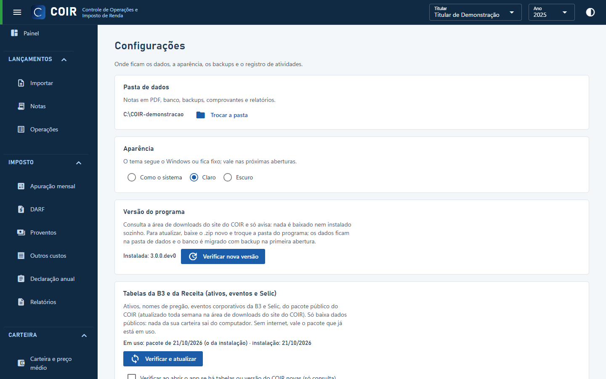

Configurações

Pasta de dados, aparência (tema do Windows, claro ou escuro), backups (fazer agora, restaurar), tabelas de referência (versão em uso e o botão Atualizar tabelas), versão do programa (Verificar nova versão; a opção de verificar ao abrir vale para tabelas e programa), enviar notas para suporte e o registro de atividades (importações, backups, migrações e erros, com filtro e botão para abrir a pasta).
Enviar notas para suporte
Para uma nota que o COIR não lê, ou lê errado (por exemplo, de uma corretora que ele ainda não conhece). Escolha os PDFs. O COIR grava, na pasta suporte dentro da pasta de dados, um .zip com o texto de cada nota sem os seus dados pessoais. Nome, CPF, conta, endereço, telefone, assessor e dados bancários viram fictícios do mesmo tamanho, no mesmo lugar. Os valores, os ativos e as datas ficam como estão.
Uma nota só entra no .zip se passar em duas conferências:
- o COIR lê na cópia exatamente o que lê no original;
- nenhum dado pessoal do original sobra na cópia.
A que não passa aparece com o motivo e fica de fora. Mande o .zip pelo contato do site. Os PDFs não são guardados nem enviados.